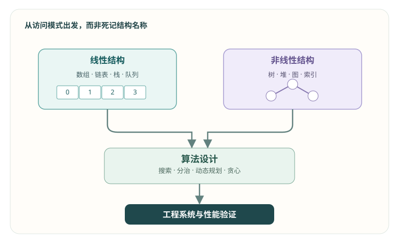

A VISUAL FIELD GUIDE · 28 CHAPTERS
理解数据，
理解数据，
才能选择正确的结构。
从一次数组访问、一次链表插入、一次哈希冲突开始，逐步建立操作代价 → 不变量 → 算法设计 → 工程取舍的完整心智模型。

结构承载数据；操作、约束与访问模式决定它是否合适。
HOW TO READ
每一章都回答一个可以验证的问题
01 / 直觉
用小例子发现问题
先看具体数据和操作，了解为什么已有方法会慢或容易出错。
02 / 推理
画出状态与不变量
跟踪元素、指针和边界；推导时间、空间复杂度及成立条件。
03 / 实践
运行代码并检查边界
对空输入、重复元素、极端规模做测试，而不是只记住标准答案。
CURRICULUM
从基础结构走向真实系统
按知识依赖组织课程。第 01–03 章已使用新的逐步图解版式，其余章节保留原始内容并持续迭代。
MODULE 01
3 章理解计算代价
结构选择、复杂度、连续内存
MODULE 02
4 章线性结构
链表、栈、队列、散列
MODULE 03
6 章树、堆与图
层次、索引、搜索与最短路径
MODULE 04
5 章算法设计
排序、分治、搜索、动态规划
MODULE 05
4 章高级索引
并查集、区间查询、前缀与磁盘索引
MODULE 06
6 章应用与项目
面试、系统、性能与综合训练
没有匹配的章节。试试“复杂度”或“链表”。
先掌握代价模型，再记住技巧。
本教程将围绕 28 章持续更新：概念精确性优先于装饰，图示配合文字解释，代码提供可执行边界用例。
理解复杂度分析 →